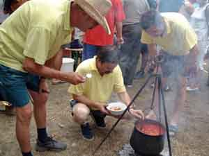
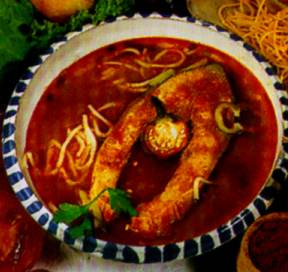
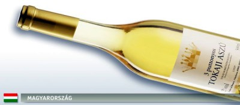
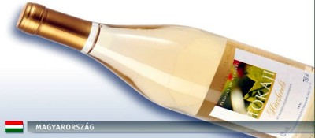

|
Kochrezepte
|
|
|
|
|
|
|
 |
|
|
|
|
|
|
|
|
|
|
|
|
|
| |
| |
|
|
|
|
|
|
|
|
|
|
| |
|
|
|
|
|
|
|
|
|
|
|
|
|
|
|
|
|
|
| |
| |
| Das
Wetter in Ungarn |
 |
| aktuelle
Temperaturen |
| |
|
|
|
|
|
|
Fischgerichte
- Halételek
|
| |
Fisch
verspeist man gekocht oder gebraten weltweit
ähnlich, daher wollen wir auf die Wiedergabe verzichten. Was
ist
anders in Ungarn? Dieser Frage sind wir nachgegangen.
Die
ungarische Küche unterscheidet sich von der deutschen
Küche vor allem in der Verwendung von Paprika in
großen Mengen. Das fällt am meisten bei den
Fischsuppen auf. In Ungarn kennt man zwei verschiedene Fischsuppen, die
nach den südungarischen Städten Baja (an der Donau)
und Szeged (am Theiß) benannt sind:
1.
Fischsuppe auf Bajaer Art - wir wollen diese Fischsuppe
nicht gesondert beschreiben, denn das Rezept ist absolut identisch mit
dem, was man in Deutschland entlang der Flüsse Donau, Rhein,
Main oder Schlei im Norden kennt. Das ist ein Hinweis darauf, dass der
Ursprung der Fischsuppe auf Bajaer Art wahrscheinlich in Deutschland liegt. Baja an
der Donau ist eine Gegend, wo vor rd. 250 Jahren Ungarndeutsche, die sog. Donauschwaben
in einer von den Türken weitgehend menschenleer hinterlassenen
Landschaft per Donauschiff ansiedelten....
Vermerk: Die meisten Donauschwaben stiegen in Ulm in die
Donaukähne ein und stiegen in Wien in
größere Donauschiffe um. An
der Umsteigestation in Wien ist heute eine Schiffsausstellung,
wo man die damaligen Kähne und Auswandererschiffe betrachten
kann.
...und so wird die
Fischsuppe in
der Gegend
von Baja an der
Donau mit
Nudeln auf schwäbische Art, traditionell von den
Ansässigen mit Spätzle, von den Zugereisten mit
allerlei Nudelsorten serviert. - Noch soviel
zum Verständnis, dass diese Fischsuppe reich an Salz
und Pfeffer ist. Wer es noch schärfer mag, kann auch
getrocknete Chilischoten mit den Fingern in die Suppen reiben (sog.
Chiliflocken). Unabhängig von der Wetterlage findet
alljährlich in Baja an der
Donau das
traditionelle Fischsuppen-Festival statt. Die Suppe wird dabei in einer
Reihe von unzähligen Kesseln zubereitet.
2.
Fischsuppe auf Szegediner Art - Etwas
östlich von Baja liegt die Stadt Szeged am Fluß
Theiß. Man kann daher nur vermuten, dass der Ursprung dieser
Fischsuppe eventuell im Raum von Baja an der Donau liegen
könnte, denn der Unterschied im Rezept ist gering - in
Szegedin dominiert Paprika statt Pfeffer. Der Grund dafür ist
wahrscheinlich, dass die Gegend von Szegedin ein Paprika-Anbaugebiet
ist. |
|
|
| Szegediner Fischsuppe /
Halászlé |
|  |
Das
Bild zeigt den Höhepunkt - die
Verköstigung - eines
Wettbewerbs in
Fischsuppenkochen am Badacsonyberg am Balaton.
Um
diese typische Speise der ungarischen Gastronomie rankten sich schon
lange die Legenden. Die Fische zu fangen und die sättigende
Suppe zu kochen
war Männersache - ganz wie bei den Hirtengerichten. Aber das
Menü mit
Fischgrieben, Fischsuppe und Bratfisch haben Frauen kreiert. Die
Harmonie von
Fisch, Zwiebeln und Paprika wurde an der Theiß
früher konzentriert, indem man
kleinere Fische zu einer „Grundsuppe” kochte,
passierte und darin die
Fischscheiben kochte. Heute entsteht der Sud meistens durch
Pürieren von Gräten,
Kopf und Schwanz. |
|  |
Welche
Suppe schmeckt besser? Die
Fischsuppenfeste in Szeged und
Baja ziehen Tausende von
Interessenten an, die zwei Städte rivalisieren wie
„Oxford und Cambridge”,
viele wollen ins Guiness-Buch der Rekorde aufgenommen werden. Im
allgemeinen wird
die aus Fischsud gekochte Suppe „Szegediner”, die
mit Nudeln servierte „Bajaer”
genannt.
Mindestens
eine Karpfenscheibe gehört auf jeden Teller. Wenn die
Fischsuppe in Baja mit Nudeln serviert wird, dann ist sie eben die
Bajaer
Fischsuppe, die weniger trüb aussieht, als die Szegediner
Fischsuppe.. |
Das
Rezept für 8 Personen:
Zutaten:
2 kg
beliebigen
Fisch (z.B. Hecht, Wels, Barsch, Schleie, die Hälfte sollte jedoch Karpfen
sein), 3 große Zwiebeln, 3 mittelgroße Tomaten, 3 Paprikaschoten, 3 EL
Rosenpaprikapulver, 1-2 scharfe Paprikaschoten, Salz, 1 l
Rotwein.
|
 |
Zubereitung:
Den
Karpfen von den Schuppen befreien und säubern. Zerteilen:
aus dem Kopf den
Bitterzahn entfernen, aus dem Rumpf der Karpfen Scheiben schneiden, den
Rest in
kleine Stücke schneiden und salzen.
Paprikaschoten und Tomaten in kleine Stücke, die Zwiebeln in
kleine Ringe schneiden. |

 |
Die
Fischköpfe, Mittelgräten und Flossen zusammen mit den
Zwiebelringen in einen Topf geben und mit Wasser auffüllen,
sodass alles bedeckt ist. Aufkochen und den Rosenpaprika
dazugeben. Ca. 1 Stunde köcheln lassen.
Die fertige Fischsuppe abseihen und zusammen mit den
Fischstücken in einen Topf geben. Rogen und Fischmilch,
kleingehackte Tomaten und Paprikaschoten hinzufügen und ca.
15-20 Minuten bei starker Hitze gar kochen. Die Fischsuppe
nicht umrühren, sondern nur den Topf schwenken. |
Serviervorschlag:
sehr heiß in einer Suppenterrine servieren und individuell
mit Schmand oder
Saurer Sahne beträufeln. Brot oder Nudeln als
Beilage, wie oben beschrieben.
Die
Ungarn essen gewöhnlich Topfenfleckerl mit Quark,
nach der
Fischsuppe. Es ist eine
andere Landesspezialität aus der ungarischen Küche,
die in Deutschland zwar als Vorspeise gilt, aber das
allgemeine Wohlbefinden nach
der
paprikareichen Fischsuppe besonders
hervorragend abrundet.
Getränkevorschlag:
Weißwein Chardonnay aus dem Weinbaugebiet oder
Lindenblatt aus dem Weinbaugebiet
auf
8-10°C gekühlt.
|
Wer in
Budapest ein
Fischrestaurant sucht, dem empfehlen wir gerne
das Restaurant am
westlichen Fuße der Donaubrücke
Árpád oder in der Pußta in der
Nähe von
Szeged das bestens bekannte Fischrestaurant
|
 |
Das sind zwei empfehlenswerte Restaurants in Ungarn, wo
wirklich landestypisch gekocht wird! Die
Ortschaft Algyő liegt
nordöstlich und außerhalb von Szegedin, jedoch
nur 5-6 km
entfernt vom Stadtzentrum der Pußtastadt Szeged bzw.
Szegedin. |
|
| |
| |
|
Ungarn-Tourist Team

|
| |
| |
|